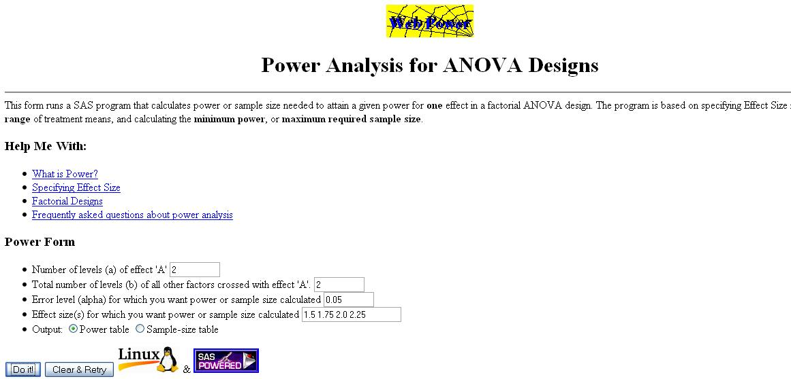
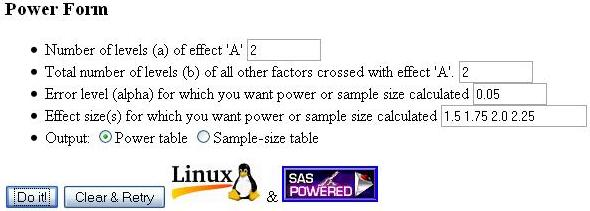
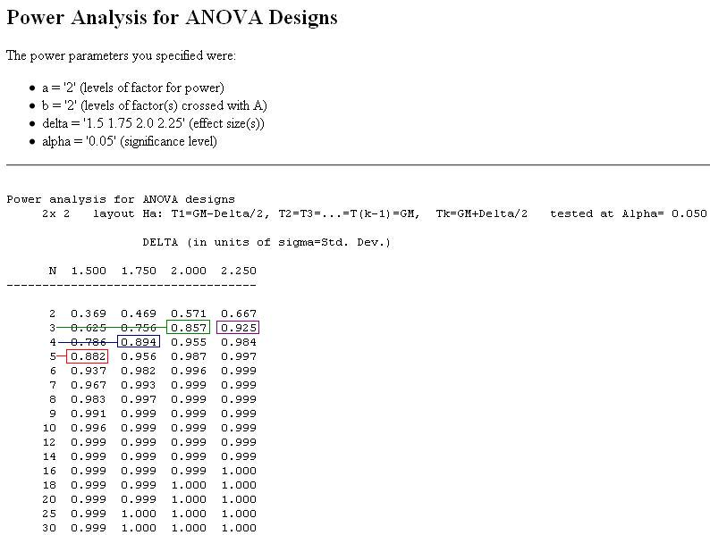

There are several sample size calculators available on the web. The following is one such calculator:
http://math.yorku.ca/SCS/Online/power/
Recall that Jill is interested in testing whether or not the mean tumor size for each treatment group are equal. Jill wants to know how many mice she needs in each group in order to detect a difference of 1.5, 1.75, 2.0, or 2.25 standard deviations at a significance level of 0.05 and a power of at least 80%.
The following is an example of how Jill used the online calculator along with her results.
Example

Zoomed In
Jill is interested in comparing two treatments taken individually and taken together. That is, she is interested in the interaction between the two treatments. Hence the number of levels of effect 'A' is 2 (for the one of the treatments and the lack of this treatment) and the number of levels of effect 'B' is 2 (for the other treatment and lack of this treatment). Jill wants the level of significance to be 0.05, and she is interested in four different levels of the effect size (1.5, 1.75, 2.0, 2.25). Using this information Jill is able to fill out the table in the following way.

Results

Interpretation
From the above output Jill can see that in order to obtain at least 80% power she will need at least 5 mice per group to detect a difference of 1.5 standard deviations. In fact the power would actually be 88.2%. If however she only needs to detect a difference of 2 standard deviations then a sample of 3 mice per group will give her a power of 85.7%.
-- ErinEsp - 13 Mar 2010